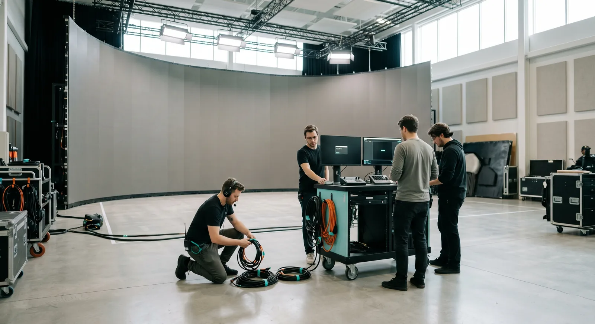

Ontario's film tax credits reward money spent in Ontario, and a volume build is part of that spend when it qualifies. The trick is knowing which credit your production falls under and what counts toward it. Get that straight early and the budget gets easier, not harder.
Cineva by Apex Sound & Light is not your tax counsel, and this is not advice. It is the plain version line producers ask us for when they are scoping a Greater Toronto Area shoot. The numbers below were verified in June 2026 against Ontario Creates, so confirm them with Ontario Creates and your accountant before you bank on a figure. Rates and eligibility rules change, and the wrong assumption locked into a budget early is expensive to unwind later.
The three credits
Three programs cover most of what a volume show touches. Each is a credit on qualifying Ontario expenditure, not a flat rebate on your whole budget.
- OPSTC, 21.5 percent. The Ontario Production Services Tax Credit, for service and foreign productions, on qualifying Ontario labour and other qualifying Ontario spend.
- OFTTC, 35 percent. The Ontario Film and Television Tax Credit, for Canadian-controlled productions, on qualifying Ontario labour. A first-time producer can reach 40 percent on a portion of spend.
- OCASE, 18 percent. The Ontario Computer Animation and Special Effects credit, on qualifying Ontario labour for eligible computer animation and visual-effects work.

Where a volume fits
Most of these credits are weighted toward qualifying Ontario labour, so the people running your wall matter as much as the gear. OPSTC reaches beyond labour into other qualifying Ontario expenditure, which is where a volume rental and the crew to run it can factor in. OFTTC and OCASE are labour-led, so the value there comes from Ontario hands doing the work, your operators, your content team, your stage crew. OCASE is the narrowest of the three, aimed at the animation and visual-effects labour, so the content you build for the wall may belong there while the stage rental sits elsewhere.
That split is the whole point. The wall, the processing, the playback, and the content are not one line item, and they do not all land under the same credit. A build scoped as a clean Ontario expenditure, run by an Ontario crew, gives your accountant something tidy to work with. A vague lump sum does not.
Two things drive almost every claim: where the money was spent and who did the work. Ontario spend run by Ontario crew is the spine of the system, and a volume build sits squarely on it when the rental, the labour, and the content are documented as Ontario expenditure. The content you create for the wall, the animation and the visual-effects work, may belong with one credit while the stage and the gear sit with another. None of that is a reason to skip the build. It is a reason to quote it in parts that an accountant can map.
Scope it early
The mistake we see most is scoping the wall after the credit plan is locked. Do it the other way. Decide which credit the production sits under, then build the volume quote so its lines map to how you will claim. A quote that separates the rental, the crew, the processing, and the content is easier to defend than one fat number, and it lets your accountant slot each piece against the right program instead of arguing the whole sum at once.
Rates move and rules get refined, so treat this as the starting map, not the territory. The honest line: the credit follows qualifying Ontario spend, and a volume build is part of that spend when it is structured to qualify. Equipment and the build qualify only to the extent they are qualifying Ontario expenditure, which is exactly why the structure matters more than the sticker price. Confirm the current rates and your eligibility with Ontario Creates and your tax counsel, then let us quote a build that fits the plan.